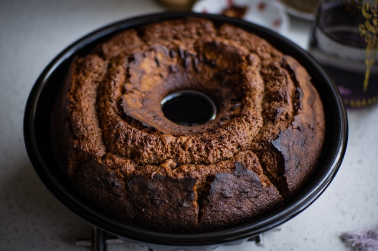

Receitas Populares
Bolo de Chocolate
postado em 12/12/2020
Ingredientes
- 1 xícara (chá) de leite
- 1 xícara (chá) de óleo
- 2 xícara (chá) de farinha de trigo
- 1 xícara (chá) de chocolate ou achocolatado
- 1 xícara (chá) de açúcar
- 2 ovos
- 1 colher (sopa) de fermento em pó
Modo de Preparo
- Bata no liquidificador os ovos por 5 minutos.
- Acrescente aos poucos os demais ingredientes, exceto o fermento.
- Depois de bater acrescente então o fermento.
- Coloque em uma forma média untada e enfarinhada.
- Leve para assar em forno médio, pré-aquecido por 45 minutos, ou até dourar.
Pudim
postado em 29/06/2021
Ingredientes
- Pudim:
- 1 lata de leite condensado
- 1 lata de leite (medida da lata de leite condensado)
- 3 ovos inteiros
- Calda:
- 1 xícara (chá) de açúcar
- 1/2 xícara de água
Modo de Preparo
- Pudim:
- Primeiro, bata bem os ovos no liquidificador.
- Acrescente o leite condensado e o leite, e bata novamente.
- Calda:
- Derreta o açúcar na panela até ficar moreno, acrescente a água e deixe engrossar.
- Coloque em uma forma redonda e despeje a massa do pudim por cima.
- Asse em forno médio por 45 minutos, com a assadeira redonda dentro de uma maior com água.
- Espete um garfo para ver se está bem assado.
- Deixe esfriar e desenforme.